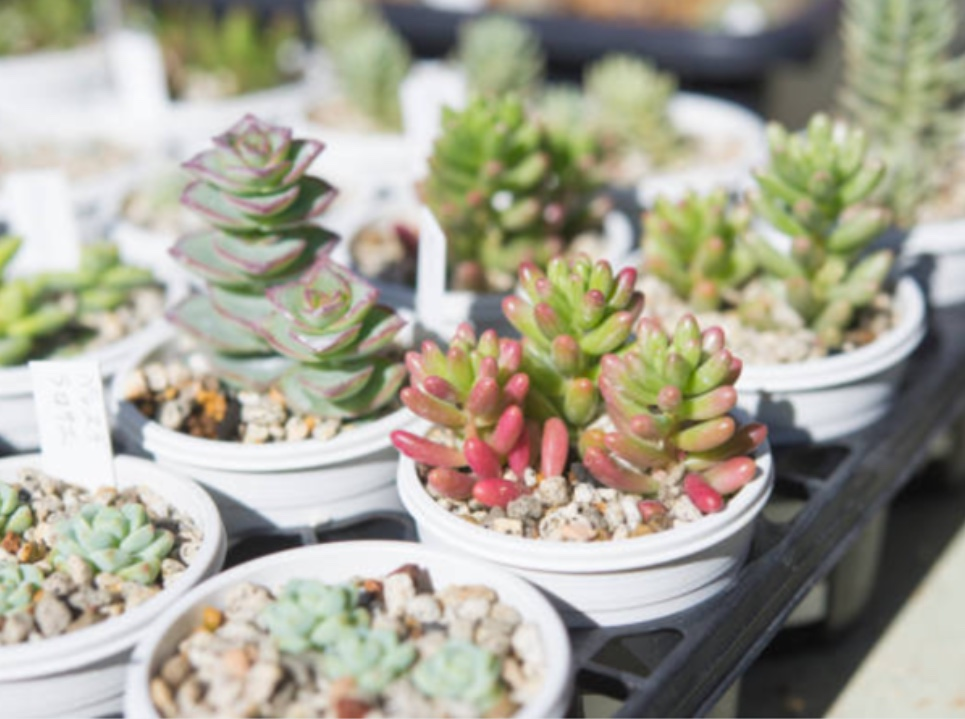
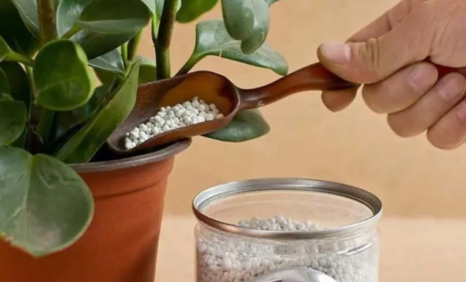

换了新的培养土，徒长有所缓解
一些肉友的多肉在养护时总发现自己的多肉枝茎过长，叶片松散不健壮，就问这是什么原因？又该怎样解决？ 多肉出现了以上情况，就是发生了徒长，这严重影响了多肉植物的美感，要是遇到了这种情况，咱们又该怎样解决呢？我的多肉最近也徒长了，于是进行了一些尝试总结了一些方法。
多肉植物为何会徒长
其实多肉植物的徒长和管理不当有关系，第一是光照不足，咱们知道多肉喜欢温暖柔和阳光，无论是冬季还是夏季都要保证自己的多肉有一定的光照时间，来让多肉充分进行光合作用，制造更多养分储存起来，这样它的叶片才会肥厚，枝茎才会缩短吗！再者多肉植物要想健壮不徒长，咱们还要重视给它多通风透气，增强它的抵抗力，这样它才会更有姿态吗！
注意水肥管理，少用氮肥，多用腐熟的有机肥和缓释型复合肥。
多肉植物徒长该怎么办
在生长季节管理，还要正确的水肥管理，为了避免徒长，让植株矮霸健壮，要注意适量浇水，维持植料的偏干状态，并且施肥要减少氮肥的使用量，要多用腐熟的有机肥，多用缓释型复合肥，这样多肉植物的植株才会更加健壮。
使用缓释型复合肥之外，还可以给多肉喷洒少许助壮药物，达到控旺防徒长的目的，不过建议大家最好不要使用磷酸二氢钾控旺，原因是磷酸二氢钾除了可以起到控旺作用之外，还可以补充磷钾元素，多肉植物得到磷钾元素，非常容易开花，多肉开花是灾难性的，非常可能导致植株的死亡。
5评论
花客君 回复
不错的建议，这就去试试～
兰 回复
补充一点，对待徒长的茎叶可以砍头然后扦插
青绿盆中栽 回复
对对，我的多肉就是这样越养越多的。砍头或者摘掉徒长叶片的多肉，可以把它们放在室外中午遮光处露养，这样可以沐浴早晚柔光，还可以更好的通风透气，这样就减少了徒长的可能，再发茎叶就比较肥厚而结实了。
护花使者 回复
很有道理，我之后把扦插补充上
花客君 回复
可以分享一下肥料的搭配比例吗？自己摸索起来还是有难度的